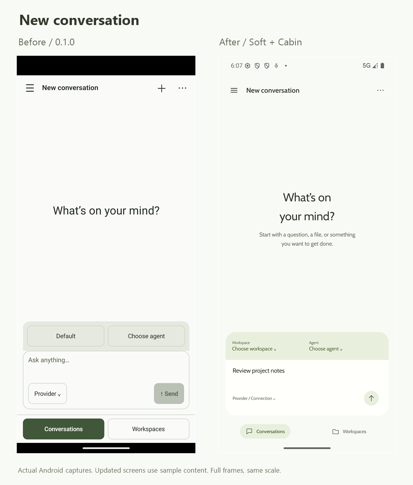
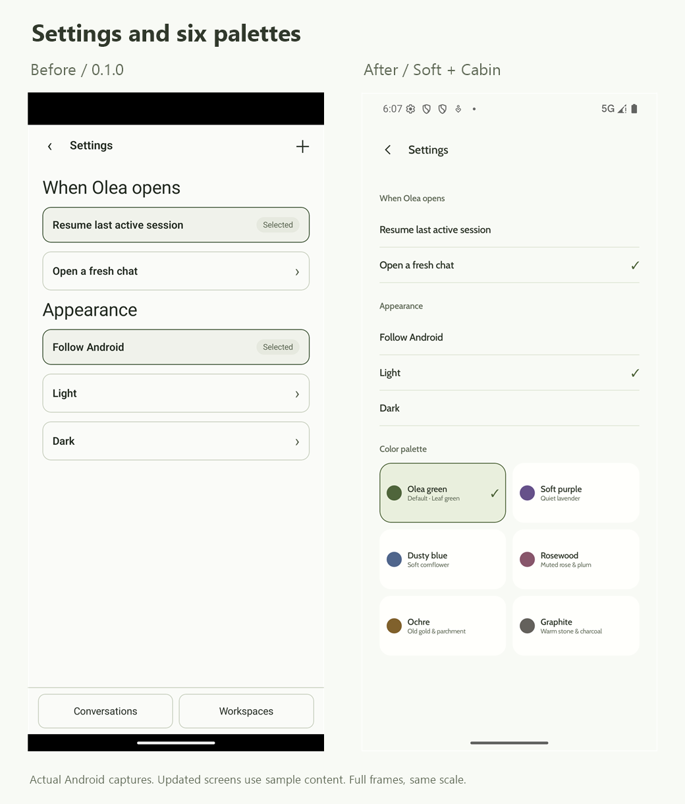
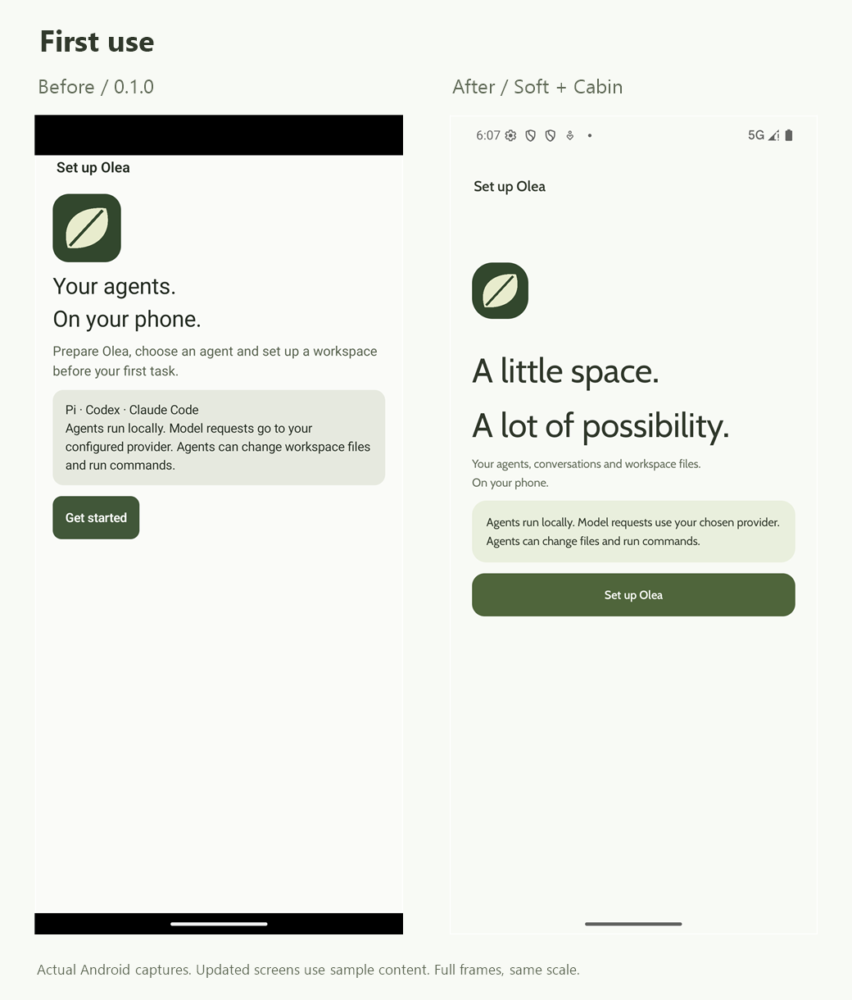
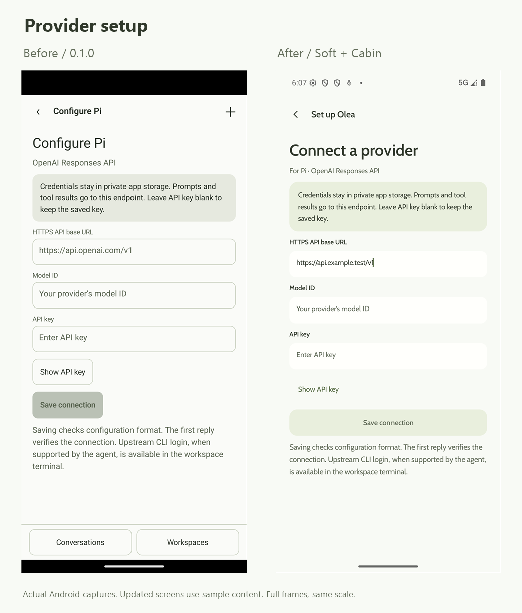
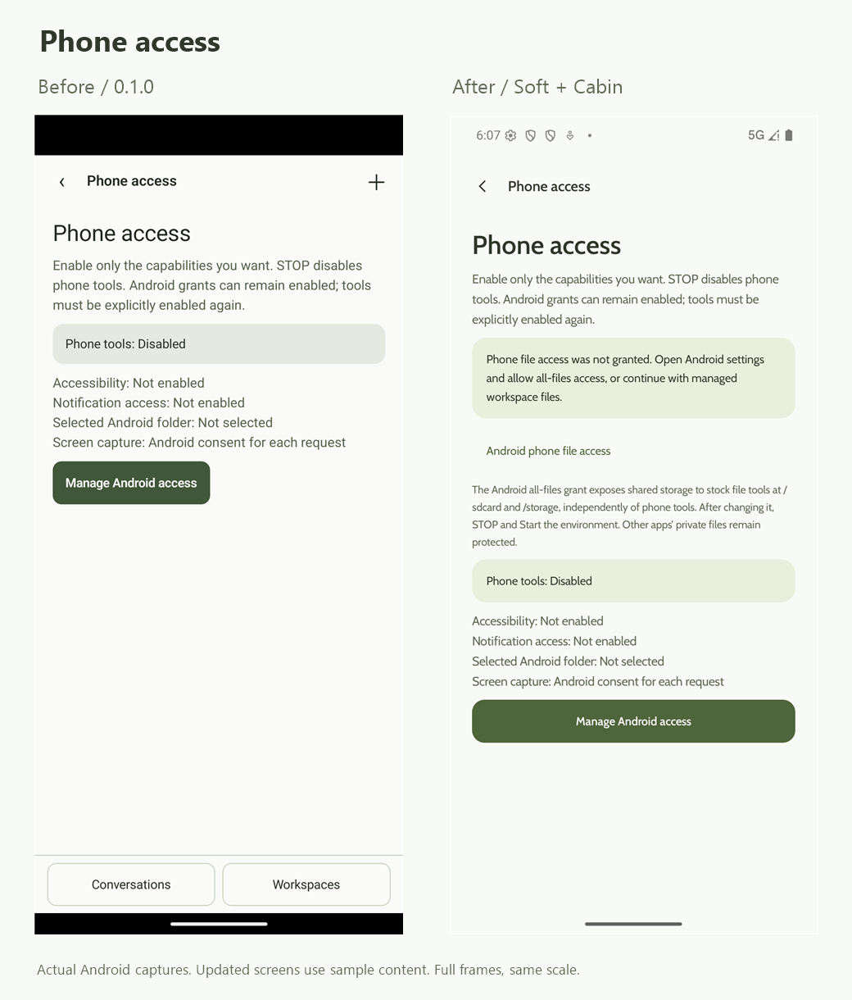

Actual Android emulator captures, not browser mockups. Updated screens use diagnostic sample content; these images demonstrate appearance, not live AI results. Preferences, form contents and permission state differ between the two installations. Both source sets are 1080 × 2400 pixels; no screen content or system bars were retouched. Olea 0.1.1 is published, with each comparison shown separately in its release notes.